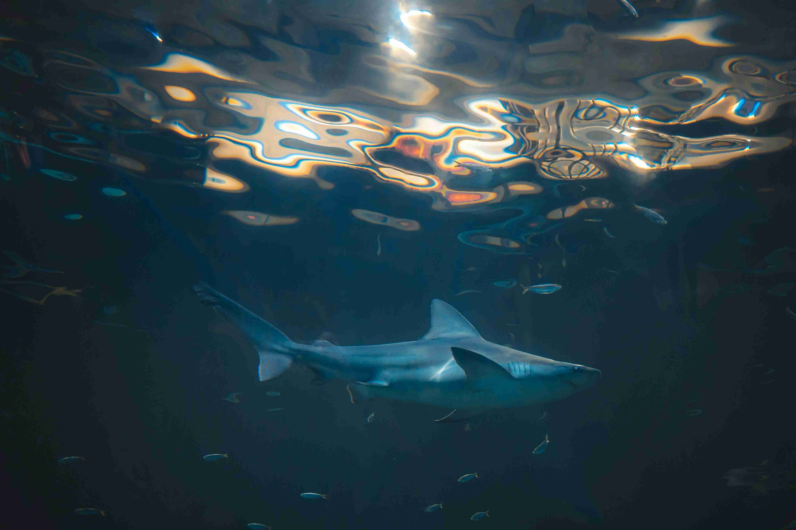

Лайтбокс на чистому JavaScript
Лайтбокс — це інструмент для перегляду зображень у збільшеному вигляді, який відкривається поверх основного вмісту сторінки. Це популярна функція, яку використовують для галерей, слайдерів або простого перегляду окремих зображень у зручному форматі.
Як це працює?
Лайтбокс складається з декількох ключових елементів:
- Контейнер зображень — група зображень, які можна переглядати через лайтбокс.
- Модальне вікно — це невидимий спочатку елемент, який з'являється при натисканні на зображення, і показує його у збільшеному вигляді.
- Навігація — кнопки для перемикання між зображеннями, якщо їх кілька в групі.
- Закриття лайтбоксу — можливість закрити модальне вікно, натиснувши на кнопку "хрестик" або клікаючи поза зображенням.
Коли користувач натискає на зображення, лайтбокс стає видимим і відображає відповідне зображення. Також є можливість переключати зображення за допомогою стрілок або клавіатури. Кожного разу, коли завантажується нове зображення, лічильник показує поточний індекс зображення, наприклад, "1/5", "2/5" тощо.
*Також передбачена можливість того, що на сторінці може бути декілька лайбтокс контейнерів. **Для стилізації кожного лайтбоксу рекомендується задавати унікальні класи.
Перша група лайтбокс зображень
Друга група лайтбокс зображень

Приклад використання
HTML:
<div data-lightbox-container>
<img data-lightbox-item src="image1.jpg" alt="Image 1">
<img data-lightbox-item src="image2.jpg" alt="Image 2">
</div>
<div data-lightbox-container>
<img data-lightbox-item src="image3.jpg" alt="Image 3">
<img data-lightbox-item src="image4.jpg" alt="Image 4">
</div>
<div class="lightbox" id="lightbox"> <--- Візуал лайтбокса, кнопки.
<span class="lightbox__close">×</span>
<span class="lightbox__counter" id="lightboxCounter">1/2</span>
<img class="lightbox__img">
<a class="lightbox__prev">❮</a>
<a class="lightbox__next">❯</a>
</div>
CSS:
.lightbox {
display: none;
position: fixed;
z-index: 1000;
left: 0;
top: 0;
width: 100%;
height: 100%;
background-color: rgba(0, 0, 0, 0.9);
}
.lightbox__img {
width: 80%;
height: 100%;
object-fit: cover;
max-width: 80%;
max-height: 80%;
position: absolute;
top: 50%;
left: 50%;
transform: translate(-50%, -50%);
}
.lightbox__close {
position: absolute;
top: 15px;
right: 35px;
font-size: 40px;
color: white;
cursor: pointer;
}
.lightbox__prev, .lightbox__next {
cursor: pointer;
position: absolute;
top: 50%;
width: auto;
padding: 16px;
color: white;
font-weight: bold;
font-size: 30px;
transition: 0.3s;
}
.lightbox__prev {
left: 0;
}
.lightbox__next {
right: 0;
}
.lightbox__counter {
position: absolute;
bottom: 20px;
left: 50%;
transform: translateX(-50%);
font-size: 18px;
color: white;
z-index: 1001;
cursor: pointer;
}
.lightbox__container {
display: flex;
justify-content: space-between;
align-items: center;
width: 100%;
flex-wrap: wrap;
gap: 15px;
}
/* change for your need's */
.lightbox__container img {
width: 300px;
height: 250px;
cursor: pointer;
object-fit: cover;
}
@media (max-width: 768px) {
.lightbox__container {
justify-content: center;
}
/* change for your need's */
.lightbox__container img {
width: 100%;
height: 100%;
}
}
Javascript:
document.addEventListener('DOMContentLoaded', () => {
const lightbox = document.getElementById('lightbox');
const lightboxImg = lightbox.querySelector('.lightbox__img');
const lightboxCounter = lightbox.querySelector('#lightboxCounter');
const closeBtn = lightbox.querySelector('.lightbox__close');
const prevBtn = lightbox.querySelector('.lightbox__prev');
const nextBtn = lightbox.querySelector('.lightbox__next');
let currentImages = [], currentIndex = 0;
let isLightboxOpen = false;
document.querySelectorAll('[data-lightbox-item]').forEach(item => {
item.addEventListener('click', () => {
currentImages = Array.from(item.closest('[data-lightbox-container]').querySelectorAll('[data-lightbox-item]'));
currentIndex = currentImages.indexOf(item);
openLightbox(currentIndex);
});
});
[closeBtn, lightbox].forEach(el => el.addEventListener('click', e => {
if (e.target === lightbox || e.target === closeBtn) closeLightbox();
}));
nextBtn.addEventListener('click', () => {
if (isLightboxOpen) changeImage(1);
});
prevBtn.addEventListener('click', () => {
if (isLightboxOpen) changeImage(-1);
});
document.addEventListener('keydown', e => {
if (e.key === 'Escape') closeLightbox();
if (isLightboxOpen) {
if (e.key === 'ArrowRight') changeImage(1);
if (e.key === 'ArrowLeft') changeImage(-1);
}
});
const openLightbox = index => {
lightboxImg.src = currentImages[index].src;
lightboxCounter.textContent = `${index + 1}/${currentImages.length}`;
lightbox.style.display = 'block';
isLightboxOpen = true;
};
const closeLightbox = () => {
lightbox.style.display = 'none';
isLightboxOpen = false;
};
const changeImage = direction => {
currentIndex = (currentIndex + direction + currentImages.length) % currentImages.length;
openLightbox(currentIndex);
};
});